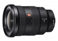
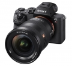

器材库 > 35mm画幅AF变焦镜头 > FE 16-35/2.8 GM

详细规格
发布日期
2017-05-18
厂家推荐价格
17,500.00 （人民币）
焦距
16mm-35mm
最大光圈
f/2.8
最小光圈
f/22
视角（对角）
107° - 63°
镜头结构
16片/13组
非球面镜片
5片
低/超低色散镜片
2片
光圈叶片
11片
最近对焦距离
28cm
最大放大倍率
0.19倍
驱动马达
DDSSM
滤镜口径
82mm
镜头卡口
Sony E
防抖
否
颜色
黑色
尺寸
88.5×121.6mm
重量
680g
备注
防尘防潮设计
该产品暂无存档的网友点评
产品图 / 样片
FE 16-35/2.8 GM

FE 16-35/2.8 GM
评测 / 相关文章
- 详细内容 （存档）
- 高分辨率表现 索尼FE 16-35mm GM镜头评测 （存档）
- ［资讯］DPReview公布2017年年度相机 （存档）
- ［试用］吞食天地的力量 索尼FE16-35 F2.8GM （存档）
- ［行情］索尼16-35GM最新特价 （存档）
- ［资讯］索尼16-35/2.8 GM值得购买 （存档）
- ［行情］索尼16-35/2.8GM上市销售 （存档）
- ［试用］索尼FE 16-35mm f/2.8 GM实拍样张 （存档）
- ［资讯］索尼FE 16-35mm F2.8 GM镜头图赏 （存档）
- ［资讯］索尼全画幅镜头群未来将更强大 （存档）
- ［资讯］索尼两款新广变体积大对比 （存档）
相关文章
- ［资讯］DPReview公布2017年年度相机 （存档）
- ［试用］吞食天地的力量 索尼FE16-35 F2.8GM （存档）
- ［行情］索尼16-35GM最新特价 （存档）
- ［资讯］索尼16-35/2.8 GM值得购买 （存档）
- ［行情］索尼16-35/2.8GM上市销售 （存档）
- ［试用］高分辨率表现 索尼FE16-35mmGM镜头评测 （存档）
- ［试用］索尼FE 16-35mm f/2.8 GM实拍样张 （存档）
- ［资讯］索尼FE 16-35mm F2.8 GM镜头图赏 （存档）
- ［资讯］索尼全画幅镜头群未来将更强大 （存档）
- ［资讯］索尼两款新广变体积大对比 （存档）
- ［试用］焦段为王！终于补齐索尼微单大三元！ （原站已下线）